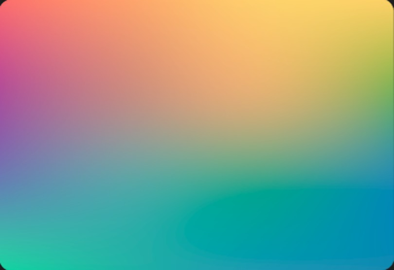
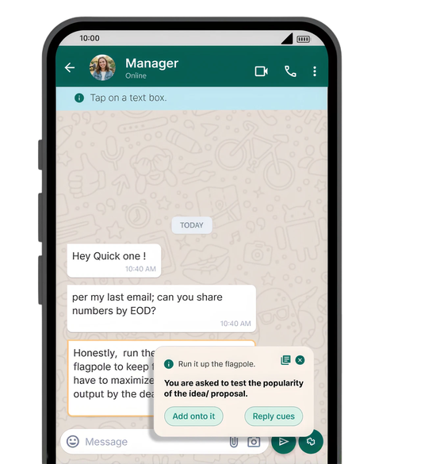
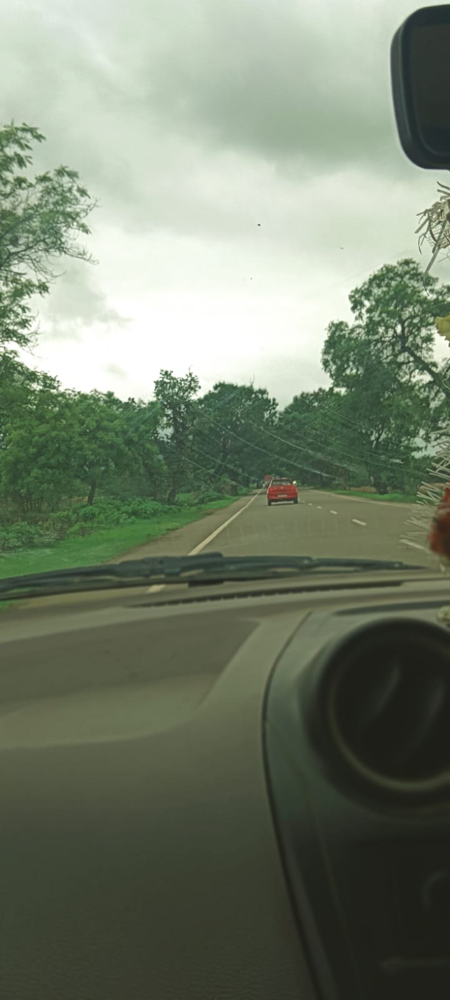

Private Editable Decode Product DesignSyncletter
Syncletter translates corporate jargon and idioms — helping users understand what a message means, how urgent it is, and how to reply.
User ExperienceNearU
How might we build a trusted, hyperlocal buying culture within campus communities, so student makers can be discovered by the buyers right around them instead of scattered, informal channels?
AccessibilityNCFE - Redesign
How might we help people with low financial awareness find and trust reliable financial guidance, when it’s currently buried behind poor navigation and no clear starting point?

Data and NarrativesAre they Driving?
What prompts my home, Kalahandi to have the higher deaths than injuries from driving accidents?